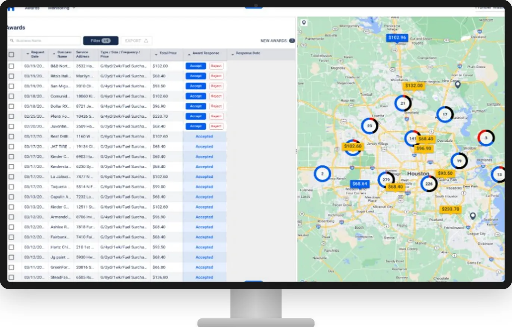

서비스 활성화율 개선을 위한
파트너 프로덕트 기획/운영
Dumpster 배송 프로덕트
계약은 쌓이는데,
왜 실제 매출은 안 잡히지?
영업팀이 월간 반복 매출(MRR) 4천만원 규모의 계약을 매달 가져왔지만, 계약서상 매출은 늘어나는데 실제 매출로 인식되는 금액은 정체되어 있었습니다.
고객여정 분석 결과, 계약 체결 후 첫 결제 전 70%의 고객이 이탈하여 실질 매출 전환이 저조했습니다.
도달해 실제 서비스 이용으로 연결된 비율
정보 누락 → 배송 지연 → 고객 이탈
문제는 배송이 아니라,
정보가 전달되는 방식이었습니다
Activation 70% 이탈의 원인이 단순히 "배송이 느려서"가 아니라는 직감이 있었습니다. 이메일로 오가는 조율 과정 어딘가에서 정보가 새는 것이라는 가설을 세우고, 3개월간 직접 파트너 응대 업무를 수행하며 검증했습니다.
예상대로였습니다. 고객 → Haulla → 파트너로 이어지는 이메일 체인에서 정보 누락이 반복적으로 발생하고 있었고, 이것이 배송 지연과 고객 이탈의 실제 원인이었습니다.
"배송 자체가 문제가 아니라, 배송 전 단계의 커뮤니케이션 구조가 문제였습니다. 이메일을 없애면 누락도 없어집니다."

이메일 대신 프로덕트로
고객과 파트너를 연결했습니다
- 중간에서 Haulla 직원이 직접 이메일을 전송하며 연결하던 방식을 프로덕트로 대체
- 수거 파트너들과 고객들이 프로덕트로 직접 소통 → 배송 관련 정보 전달 누락 개선
- 수거 파트너 전용 대시보드 구축 → 배송 스케줄 관리 간소화
- 원클릭 서비스 확정 및 배송 일정 관리 시스템 도입 → 수거 파트너들의 업무 간소화

Activation 전환율 30% → 67%
배송 소요 시간 63% 단축
프로덕트 출시 이후 3개월 만에 고객 활성화율이 2배 이상 증가하며 실질 매출이 크게 상승했고, 운영 인력 50% 감원을 통해 오퍼레이션 비용을 효과적으로 절감했습니다.
AARRR 퍼널은 '어디서 무너지고 있는가'를 보여주지만, '왜 무너지는가'는 현장에 있었습니다. 데이터가 Activation 병목을 가리켰고, 현장이 원인을 알려줬습니다. 이메일이라는 도구 자체가 정보 누락의 구조적 원인이었고, 도구를 바꾸니 병목이 사라졌습니다.